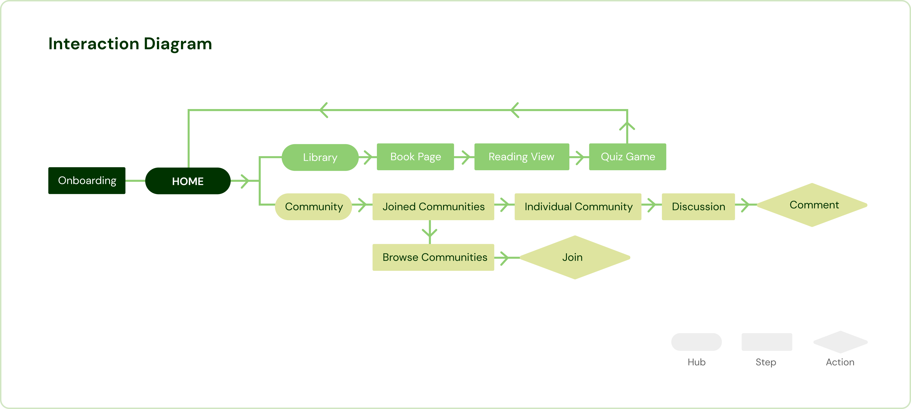

Interface Design Class | March-April 2023
Empath is a gamified daily app targeted towards seniors. Over the course of several weeks, my team researched, designed, prototyped, tested, and refined our app idea. In this page, will detail my contributions to this project.
Shahvir Sarkary, Echo Chen
Figma, Procreate, Protopie
Research, Sketching, Wireframing, Prototyping
Try the PrototypeIn our early research of our target demographic, senior adults, we discovered 2 problems that they suffer from:
1. Many seniors face loneliness due to factors like living alone and lack of work community
2. Lack of intellectual stimulation leads to cognitive decline in old age
This led us to our design goal for this project:
We want to reduce cognitive decline in seniors by fostering intellectual stimulation and sense of community as part of their daily interactions
After ideating and receiving feedback, we decided to achieve this goal through a daily reading app that stimulates brain activity and encourages community interaction.
We then decided to focus on 3 main principles to design our app around:
1. Make our app intuitive to seniors mental models
2. Aid cognitive stimulation through helping users learn
3. Cater to accessibility concerns: visual impairment, mobility impairment
Some of these principles play directly into our style guidelines which I created before designing any screens. Our focus was to make the text readable, meaning the smallest font size we utilize is 16pt. Another focus was our very large action buttons, which are forgiving to users with lessened dexterity and mobility
With this user guide, we then designed screens in Figma, based on every point of this rough interaction architecture I created of our app
After coming up with and then tweaking our Figma designs after feedback, we imported them into Protopie to build our interactions, turning our wireframes into a working prototype. While everyone in the team worked on parts of the prototype, I mainly took the lead on complex features like the reader view, settings, and chapter quizzes
Prototyping complex interactions such as Key Insights and the Quiz Game posed challenges we weren’t quite prepared for, especially since we were new to protopie.
For example, Key Insights must appear and disappear according to specific points in the text. I made this work by sending a command to increase the opacity of the insight to 100 at a certain scroll position of the container, and hide it at another position. This worked for when we had only one text size, but increasing the text size completely broke it, because it also increased the length of the scroll container!!
I remedied this by creating a variable to store the length of the container, and created another variable to divide that length by, that would change depending on the text size. With this, I could set off the Key Insights based on a proportion of the scroll container rather than a static pixel value!

With our now-working prototype, Echo and I conducted a mixture of in-person and online usability testing with 7 participants between the ages of 55 and 75. Through this, we found several areas where our app was lacking, then I made a priority matrix of changes we wanted to make in the next week.
After another week of refinement, we brought our prototype to the final state that is in now. We revamped the onboarding, added accessibility options to the reader view like increasing text size, dark mode, and the ability to toggle key insights on or off, and redesigned interactions regarding the community page for better usability. In this project, I went from an absolute newbie at Protopie to gaining a sort of confidence using the software. I also built confidence in my presentation skills through the consistent weekly progress presentations, and learned how to conduct usability tests. While there are ways I would like to improve upon this project, like doing more research and conducting another round of tests, I’m proud of what my team and I accomplished given this short time frame.